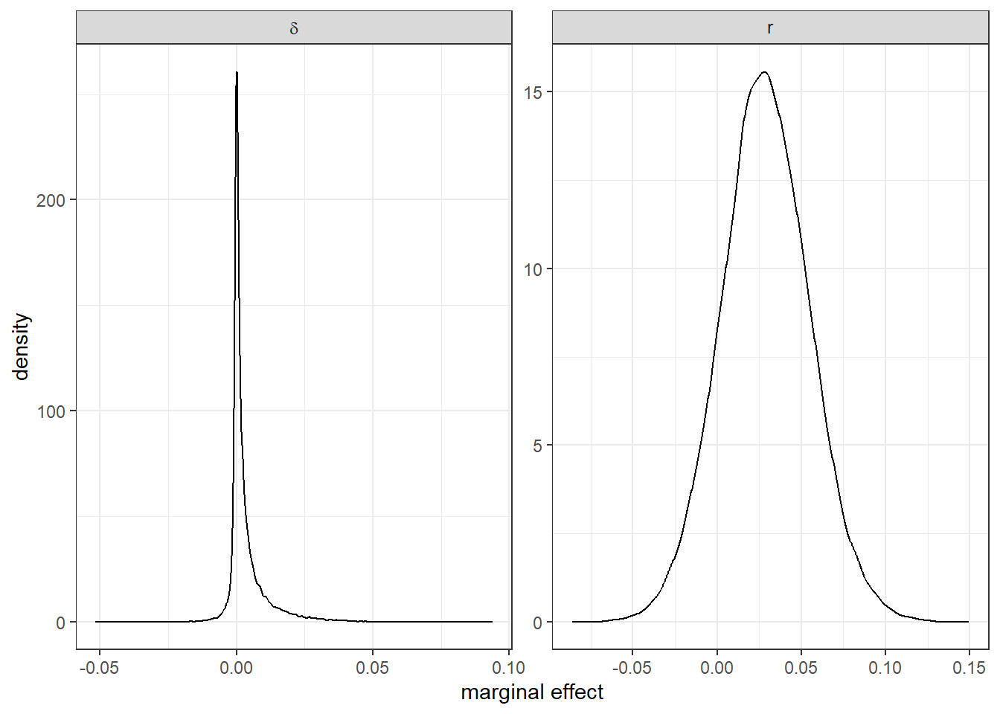
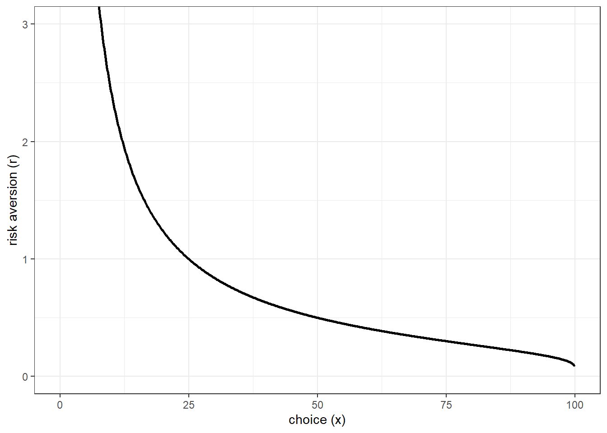

11 Using your structural estimates as explanatory variables in regression models
One thing we see a lot of in experiments is estimates of structural parameters being used as explanatory variables on the right-hand-side of regressions. This is either because we want to explicitly comment on the coefficients or marginal effects associated with these parameters, or because we want to include them as control variables (so that we can comment on other coefficients). While it is natural to want to do this, and it can answer some interesting research questions, we need to be careful. In particular, we need to use models that respect that these estimates are measured imprecisely, and that this measurement error may be non-classical. By “non-classical” here I mean that we cannot represent the measurement error as an iid shock to the measured quantity. If measurement error is classical, then there are other ways to deal with the problem (such as using an instrumental variables approach, see Gillen, Snowberg, and Yariv (2019) for an example), but the kind of measurement error we deal with is rarely classical, so having a structural model for that measurement error becomes really important.
Take for example the Holt and Laury (2002) risk preference elicitation task. In just a few decisions we can gauge the amount of risk-aversion a participant has. However since this task (usually) elicits a switching point over a discrete list of lottery pairs, all we can really conclude from a participant’s choice is that risk aversion falls within a range.58 That is, we can conclude that \(r_i\in(a_i,b_i)\), but we cannot narrow down this range further: the data are interval-valued (rather than real- or point-valued). Proper treatment of these data would respect this, and carry through this uncertainty in our estimation. Yet it is very common to “control” for (say) risk preferences just using the implied midpoints of these ranges, or just by counting the number of safe choices the participant makes. In practice, it is either difficult or impossible (depending on the type of measurement error) to carry through appropriate uncertainty in the structural estimates to the regression we would like to run, unless we estimate both the structural model and the regression jointly. This is what we will be doing in this chapter. We will explicitly model right-hand-side variables that are interval-valued, or imprecisely estimated.
11.1 Example 1: a probit model with risk preferences measured by Holt and Laury (2002).
Saccardo, Pietrasz, and Gneezy (2018) investigate the gender gap in competitiveness using a piece rate/tournament experiment. In investigating the extensive margin (do people choose to compete?), they use a probit model to estimate the difference between men and women’s decision to enter this tournament. The right-hand-side variable of interest is a female dummy variable, and in some specifications they also include decisions from a Holt and Laury (2002) task on the right-hand side as a control for risk preferences. The point of this is to account for how much of the competitiveness gender gap can be “explained” by differences in risk preferences between men and women. While Saccardo, Pietrasz, and Gneezy (2018) just include an integer for the switching point in the Holt and Laury (2002) task on the right-hand side, I will investigate an alternative model with a structural estimate of the coefficient of absolute risk-aversion on the right-hand side instead. That is, I will structurally estimate an expected utility model with CRRA utility from the risk elicitation task, and jointly estimate its effect on competitiveness. My probit model will therefore be:
\[ \begin{aligned} \Pr(\text{EnterTournament}_i=1\mid \mathrm{Female}_i, r)&=\Phi\left(\beta_0+\beta_1\mathrm{Female}_i+\alpha r_i\right) \end{aligned} \] where \(r_i\) is the CRRA coefficient, and \(\Phi(\cdot)\) is the standard normal cdf.
The trick here is to jointly estimate this model alongside estimating \(r_i\) for each subject. That way, the posterior uncertainty in \(r_i\) is carried through to the posterior uncertainty in \(\beta_0\), \(\beta_1\), and \(\alpha\). Also, since this is a non-linear model, I will of course translate these coefficients into marginal effects so we can actually understand the effect sizes. Here we are primarily interested in the marginal effect of Female, which measures the difference in probability between female and male competitiveness.
Here is the Stan program I came up with for writing this:
/* A probit model that includes CRRA risk-aversion on the RHS as
estimated from a Holt & Laury (2002) task. This accounts for the
fact that HL2002 data are interval-valued.
*/
functions {
vector HLindiff(vector r, real pr1, vector prizeA, vector prizeB) {
real uA = [pr1, 1.0-pr1]*pow(prizeA,1.0-r[1])/(1.0-r[1]);
real uB = [pr1, 1.0-pr1]*pow(prizeB,1.0-r[1])/(1.0-r[1]);
return [uA-uB]';
}
}
data {
int N; // number of observations
int k; // number of covariates
matrix[N,k] X; // covariates
array[N] int Y; // outcome variable.
array[N] int HL; // HL2002 choices
vector[2] prior_r_mean;
real<lower=0> prior_r_sd;
vector[2] prior_beta;
vector[2] prior_alpha;
array[k] int is_discrete;
}
transformed data {
vector[10] pr1 = [0.1,0.2,0.3,0.4,0.5,0.6,0.7,0.8,0.9,1.0]';
vector[2] prizeA = [200, 160]';
vector[2] prizeB = [385,10]';
vector[10] r_indiff;
for (pp in 1:10) {
// it needs a bit of hand-holding to find the critical points
real start;
if (pp<=5) {
start = -2;
} else {
start = 0.5;
}
r_indiff[pp] = solve_newton(HLindiff, [start]', pr1[pp], prizeA, prizeB)[1];
//print(HLindiff([r_indiff[pp]]', pr1[pp], prizeA, prizeB));
}
// check that we get something reasonable here
print(r_indiff);
vector[N] HL_lb;
vector[N] HL_ub;
for (ii in 1:N) {
if (HL[ii]==0) {
HL_lb[ii] = -999.999;
} else {
HL_lb[ii] = r_indiff[HL[ii]];
}
if (HL[ii]==10) {
HL_ub[ii]=999.999;
} else {
HL_ub[ii] = r_indiff[HL[ii]+1];
}
}
}
parameters {
vector[k] r_mean;
real<lower=0> r_sd;
vector<lower=HL_lb,upper=HL_ub>[N] r;
real alpha;
vector[k] beta;
}
model {
// prior ---------------------------------------------------------------------
r_mean ~ normal(prior_r_mean[1],prior_r_mean[2]);
r_sd ~ cauchy(0.0, prior_r_sd);
beta ~ normal(prior_beta[1], prior_beta[2]);
alpha ~ normal(prior_alpha[1],prior_alpha[2]);
// augmented data
r ~ normal(X*r_mean, r_sd);
// likelihood
Y ~ bernoulli(Phi_approx(X*beta+alpha*r));
}
generated quantities {
// marginal effects ----------------------------------------------------------
// since beta[1] is for the constant, we don't do that one
vector[k-1] MFX_X;
for (kk in 2:k) {
if (is_discrete[kk]>0) {
matrix[N,k] X0 = X;
X0[,kk] = rep_vector(0.0,N);
matrix[N,k] X1 = X;
X1[,kk] = rep_vector(1.0,N);
MFX_X[kk-1] = mean(Phi_approx(X1*beta+alpha*r)-Phi_approx(X0*beta+alpha*r));
} else {
MFX_X[kk-1] = mean(
beta[kk]*1.0/sqrt(2.0*pi())*exp(-0.5*pow(X*beta+alpha*r,2.0))
);
}
}
real MFX_r = mean(
alpha*1.0/sqrt(2.0*pi())*exp(-0.5*pow(X*beta+alpha*r,2.0))
);
}Here I pass the choice made by participants in the Holt and Laury (2002) task in as an integer identifying their switching point. In the transformed data block I get Stan to calculate the critical values of \(r_i\) that pin down the switching points, then generate HL_lb and HL_ub, which are the upper and lower bounds for \(r_i\) implied by the switch point. Then, in the parameters block, I explicitly tell Stan that each participant’s \(r_i\) falls in this range:
I use a hierarchical model to tame the distribution of \(r\). Specifically, in the model block I assume that \(r_i\) follows a normal distribution whose mean depends on the explanatory variables of the probit model (X):
Since X includes our other explanatory variable Female, this allows the distribution of \(r_i\) to be different between men and women (at least in that they can have different means).
Finally, in the generated quantities block, I calculate the marginal effects of X and r. Note here that I pass through an integer data variable is_discrete so that the model knows when to take the difference for a discrete RHS variable (i.e. for Female), and when it can take the derivative for a continuous variable.
"Code/SPG2018/Fit_probit.csv" |>
read.csv() |>
dplyr::select(-X) |>
kbl(digits=2, caption="Posterior summary of the joinly-estimated probit model") |>
kable_classic(full_width=FALSE) |>
add_header_above(c("","","","","Percentiles"=5,"",""))|
Percentiles
|
||||||||||
|---|---|---|---|---|---|---|---|---|---|---|
| parameter | mean | se_mean | sd | X2.5. | X25. | X50. | X75. | X97.5. | n_eff | Rhat |
| r_mean[1] | 0.78 | 0.00 | 0.18 | 0.43 | 0.67 | 0.78 | 0.91 | 1.12 | 4490.80 | 1 |
| r_mean[2] | 0.29 | 0.00 | 0.23 | -0.16 | 0.14 | 0.29 | 0.45 | 0.76 | 4348.20 | 1 |
| r_sd | 1.06 | 0.00 | 0.10 | 0.90 | 0.99 | 1.05 | 1.12 | 1.27 | 5402.67 | 1 |
| alpha | 0.07 | 0.00 | 0.15 | -0.22 | -0.03 | 0.07 | 0.17 | 0.36 | 6839.76 | 1 |
| beta[1] | 0.79 | 0.00 | 0.25 | 0.31 | 0.61 | 0.80 | 0.96 | 1.30 | 4896.86 | 1 |
| beta[2] | -1.28 | 0.00 | 0.29 | -1.85 | -1.47 | -1.27 | -1.09 | -0.70 | 5523.82 | 1 |
| MFX_X[1] | -0.45 | 0.00 | 0.09 | -0.62 | -0.52 | -0.46 | -0.40 | -0.26 | 5569.16 | 1 |
| MFX_r | 0.02 | 0.00 | 0.05 | -0.07 | -0.01 | 0.02 | 0.05 | 0.11 | 6700.16 | 1 |
| lp__ | -329.27 | 0.21 | 7.82 | -345.27 | -334.55 | -328.97 | -323.81 | -314.92 | 1351.82 | 1 |
Table 11.1 summarizes the posterior distribution of this model. Here the MFX_X[1] parameter is the marginal effect of the Female variable in the probit model. We can interpret this as female participants are about 45 percentage points less likely to compete than male participants with the same risk preferences.
11.2 Example 2: A random effects logit model with risk and time preferences.
Davis, Ivanov, and Korenok (2016) investigate the role of various individual characteristics in explaining behavior in some indefinitely-repeated games. Here I will focus on first-round cooperation in an indefinitely-repeated Prisoner’s Dilemma game. I will take a random effects logit model to the data, where the imprecisely-measured right-hand-side variables are risk and time preferece parameters. Both of these preferences were measured using a multiple price list, with the risk task looking exactly the same as the previous example (except for scaling the payoffs, i.e. it is a Holt and Laury (2002) task), and time preferences were elicited by asking participants to choose between \(\$18\) now and \(\$ x\) in a week’s time, for ten values of \(x>18\).
I will approach this problem exactly the same as the previous example in that I will assume that the risk and time preference tasks should be treated as interval-valued.59 I then impose a hierarchical structure on the joint distribution of \(r_i\) (risk preference, CRRA coefficient), and \(\delta_i\) (time preference, weekly discount rate), assuming that:
\[ \begin{pmatrix} r_i\\ \log\delta_i \end{pmatrix}\sim N(\mu,\Sigma) \]
\(r_i\) and \(\delta_i\) then become right-hand-side variables in the random effects logit regression model:
\[ \begin{aligned} Y_{i,t} &\sim\mathrm{Bernoulli\ Logit}\left(\alpha_1 r_i+\alpha_2 \delta_i + x_i^\top\beta+u_i\right)\\ u_i&\sim iid N(0,\sigma^2_u) \end{aligned} \]
where \(x_{i}\) are participant-specific characteristics that were elicited in the experiment (plus a constant),60 and the \(u_i\)s are the participant-specific random effects. Note that the random effects specification is itself a hierarchical model.
Here is the Stan program I wrote to estimate the model and calculate marginal effects. Hopefully you can see that I’ve borrowed a lot of code from my first example. There’s no need to re-invent the wheel here!
functions {
vector HLindiff(vector r, real pr1, vector prizeA, vector prizeB) {
real uA = [pr1, 1.0-pr1]*pow(prizeA,1.0-r[1])/(1.0-r[1]);
real uB = [pr1, 1.0-pr1]*pow(prizeB,1.0-r[1])/(1.0-r[1]);
return [uA-uB]';
}
}
data {
int nparticipants;
// data from risk and time preference elicitation task -----------------------
array[nparticipants] int nrisky;
array[nparticipants] int npatient;
array[2] vector[2] prior_MU;
vector[2] prior_TAU;
real prior_Omega;
// data for logit ------------------------------------------------------------
int N; // number of observations
int k; // number of explainatory variables
array[N] int Y; // outcome variable
matrix[N,k] X; // explanatory variables
array[N] int id; // participant id
array[k] int is_discrete; // indicator for whather or not an x-variable is discrete.
array[k] vector[2] prior_beta;
array[2] vector[2] prior_alpha;
real<lower=0> prior_REsd;
}
transformed data {
// bounds for HL task --------------------------------------------------------
vector[10] pr1 = [0.1,0.2,0.3,0.4,0.5,0.6,0.7,0.8,0.9,1.0]';
vector[2] prizeA = [20, 16]';
vector[2] prizeB = [38.5,1]';
vector[10] r_indiff;
for (pp in 1:10) {
// it needs a bit of hand-holding to find the critical points
real start;
if (pp<=5) {
start = -2;
} else {
start = 0.5;
}
r_indiff[pp] = solve_newton(HLindiff, [start]', pr1[pp], prizeA, prizeB)[1];
}
// check that we get something reasonable here
print(r_indiff);
vector[nparticipants] HL_lb;
vector[nparticipants] HL_ub;
for (ii in 1:nparticipants) {
if (nrisky[ii]==0) {
HL_lb[ii] = -999.999;
} else {
HL_lb[ii] = r_indiff[nrisky[ii]];
}
if (nrisky[ii]==10) {
HL_ub[ii]=999.999;
} else {
HL_ub[ii] = r_indiff[nrisky[ii]+1];
}
}
// bounds for time preference task -------------------------------------------
real payA = 18.0;
vector[10] payB = [18.09, 18.35, 18.52, 18.69, 19.04, 20.08, 21.12, 22.15, 23.19, 24.23]';
vector[10] time_indiff = payB/payA-1.0;
print(time_indiff);
vector[nparticipants] time_lb;
vector[nparticipants] time_ub;
for (ii in 1:nparticipants) {
if (npatient[ii]==0) {
time_ub[ii] = 999.999;
} else {
time_ub[ii] = time_indiff[11-npatient[ii]];
}
if (npatient[ii]==10) {
time_lb[ii]=0.0;
} else {
time_lb[ii] = time_indiff[10-npatient[ii]];
}
}
}
parameters {
vector[2] alpha; // coefficients on risk and time
vector[k] beta; // coefficients on X
real<lower=0> REsd; // sd of random effects;
vector[nparticipants] RE; // random effects
vector[2] MU;
vector<lower=0>[2] TAU;
cholesky_factor_corr[2] L_Omega;
vector<lower=HL_lb,upper=HL_ub>[nparticipants] risk;
vector<lower=time_lb, upper=time_ub>[nparticipants] time;
}
transformed parameters {
matrix[2,2] SIGMA = diag_matrix(TAU)*L_Omega*L_Omega'*diag_matrix(TAU);
}
model {
// RE logit model ------------------------------------------------------------
Y ~ bernoulli_logit(alpha[1]*risk[id]+alpha[2]*time[id]+X*beta+RE[id]);
// prior ---------------------------------------------------------------------
for (pp in 1:2) {
MU[pp] ~ normal(prior_MU[pp][1],prior_MU[pp][2]);
TAU[pp] ~ cauchy(0.0, prior_TAU[pp]);
alpha[pp] ~ normal(prior_alpha[pp][1],prior_alpha[pp][2]);
}
L_Omega ~ lkj_corr_cholesky(prior_Omega);
for (kk in 1:k) {
beta[kk] ~ normal(prior_beta[kk][1],prior_beta[kk][2]);
}
REsd ~ cauchy(0.0,prior_REsd);
// Augmented data ------------------------------------------------------------
RE ~ normal(0.0,REsd);
for (ii in 1:nparticipants) {
[risk[ii],log(time[ii])] ~ multi_normal(MU, SIGMA);
}
}
generated quantities {
vector[2] MFX_risktime;
vector[k] MFX_X;
{
// needed for marginal effects for continuous RHS variables
vector[N] XB = alpha[1]*risk[id]+alpha[2]*time[id]+X*beta+RE[id];
real dlXB = mean(inv_logit(XB).*(1.0-inv_logit(XB)));
for (aa in 1:2) {
MFX_risktime[aa] = alpha[aa]*dlXB;
}
for (kk in 1:k) {
if (is_discrete[kk]>0) {
matrix[N,k] X0 = X;
matrix[N,k] X1 = X;
X0[,kk] = rep_vector(0.0,N);
X1[,kk] = rep_vector(1.0,N);
MFX_X[kk] = mean(
inv_logit(alpha[1]*risk[id]+alpha[2]*time[id]+X1*beta+RE[id])
-inv_logit(alpha[1]*risk[id]+alpha[2]*time[id]+X0*beta+RE[id])
);
} else {
MFX_X[kk] = beta[kk]*dlXB;
}
}
}
}At this point we need to acknowedge a problem with the Davis, Ivanov, and Korenok (2016) dataset: attrition. The data for the indefinitely-repeated Prisoner’s Dilemma (i.e. \(Y_{i,t}\)) were collected on the first day of the experiment, and the participant characteristics (i.e. the right-hand-side variables) were collected on a subsequent day. Not all participants who showed up to the lab on the first day also showed up on this subsequent day, and so there are some missing data. Here I will just drop these observations, but it should be noted that this is a situation where imputation could be used. That is, we could explicitly model the missing data from the second day. However since handling missing data should be at least a whole chapter in itself, I am going to leave this as an exercise for my future self.
So to summarize, the data that go into this estimation are from the eighty-seven participants who showed up to both days of the experiment.61 From this, I also cull the first five rounds of the indefinitely repeated Prisoner’s dilemma (to mitigate initial learning effects). This leaves me with eight observations per participant for the random effects logit (since they played a total of thirteen indefinitely-repeated Prisoner’s Dilemma games).
Fit<-"Code/DIK2016/RElogit.csv" |>
read.csv() |>
dplyr::select(-X) |>
filter(
grepl("MFX",par)
) |>
mutate(
variable = c("$r$","$\\delta$","Trusted in Trust Game (D)", "Trustworthy in the Trust Game (D)", "Contribution to charity (0-1)", "Chose a dominant action (D)", "Best responded to a dominant action (D)", "Decisions respect FOSD (D)", "Plans ahead (D)", "Male (D)","constant")
) |>
filter(variable!="constant") |>
dplyr::select(variable,mean,,sd,contains("X"))
Fit |>
kbl(digits=3., caption = "Marginal effects from random effects logit model. (D) indicates dunny variable. ") |>
kable_classic(full_width=FALSE) |>
add_header_above(c("","","","Percentiles"=5)) |>
add_header_above(c("","Dependent variable $=$ first-round cooperation in IRPD"=7))|
Dependent variable \(=\) first-round cooperation in IRPD
|
|||||||
|---|---|---|---|---|---|---|---|
|
Percentiles
|
|||||||
| variable | mean | sd | X2.5. | X25. | X50. | X75. | X97.5. |
| \(r\) | 0.029 | 0.026 | -0.023 | 0.011 | 0.028 | 0.046 | 0.081 |
| \(\delta\) | 0.003 | 0.008 | -0.004 | 0.000 | 0.001 | 0.004 | 0.026 |
| Trusted in Trust Game (D) | 0.018 | 0.032 | -0.036 | -0.006 | 0.015 | 0.038 | 0.089 |
| Trustworthy in the Trust Game (D) | 0.016 | 0.031 | -0.036 | -0.006 | 0.013 | 0.035 | 0.084 |
| Contribution to charity (0-1) | -0.005 | 0.009 | -0.023 | -0.011 | -0.005 | 0.002 | 0.015 |
| Chose a dominant action (D) | 0.049 | 0.041 | -0.017 | 0.019 | 0.044 | 0.073 | 0.143 |
| Best responded to a dominant action (D) | 0.022 | 0.034 | -0.037 | -0.002 | 0.018 | 0.042 | 0.100 |
| Decisions respect FOSD (D) | 0.024 | 0.036 | -0.032 | -0.001 | 0.020 | 0.046 | 0.107 |
| Plans ahead (D) | 0.004 | 0.030 | -0.049 | -0.018 | 0.000 | 0.022 | 0.070 |
| Male (D) | 0.039 | 0.038 | -0.023 | 0.012 | 0.035 | 0.062 | 0.127 |
Table 11.2 shows the posterior distribution of the random effects logit model’s marginal effects. Here we can see that all of the effects are small and we can’t be particulary sure that they are positive or negative. Taking a closer look at the posterrior distribution of the marginal effects for our imprecisely-estimated parameters \(r_i\) and \(\delta_i\), Figure 11.1 shows the kernel-smoothed posterior density for these marginal effects. We cannot be particularly certain that these marginal effects are positive, although on balance of probabilities they are.
ALPHA<-"Code/DIK2016/RElogit_MFX.csv" |>
read.csv() |>
rename(r = V1, delta = V2) |>
pivot_longer(
cols = r:delta
)
(
ggplot(ALPHA,aes(x=value))
+geom_density()
+facet_wrap(~name,scales="free", labeller = label_parsed)
+theme_bw()
+xlab("marginal effect")
)
Figure 11.1: Kernal-smoothed posterior distribution of marginal effects for imprecicely-measured variables.
## # A tibble: 2 × 2
## name `prob positive`
## <chr> <dbl>
## 1 delta 0.701
## 2 r 0.86511.3 Example 3: Logit and ordered logit with risk preferences from Gneezy and Potters (1997)
Montoya Herrera and Willinger (2025) investigate the relationship between risk tolerance and trust. In one of their specifications (see their Table 3), they estimate the effect of risk preferences estimated in a Gneezy and Potters (1997) task on the probability of agreeing with the first part of this question: “Generally speaking, would you say that most people can be trusted or that you can’t be too careful in dealing with people?” They answer this question using various specifications of a logit model. Other control variables in their model included highest degree earned, a 0-10 political orientation score, age, and gender. They also use an ordered logit model to understand the effect of these explanatory variables on a 0-10 Likert scale response describing how trusting the respondent is.
To begin with, let’s take a refresher on the Gneezy and Potters (1997) task (which I use as an example in the first chapter of this book). In this instance, the participant is endowed with 100 tokens, and they can invest any number of these tokens in an asset that triples the investment with probability 50%, and pays nothing with probability 50%. If \(x\) is their invested amount, their final payoff is:
\[ \begin{cases} 100+2x & \text{with probability }50\% \\ 100-x & \text{otherwise} \end{cases} \] Let’s assume CRRA expected utility preferences, so we can write down the expected utility of investing \(x\in[0,100]\) as:
\[ U_i(x)=0.5\frac{(100+2x)^{1-r_i}}{1-r_i}+0.5\frac{(100-x)^{1-r_i}}{1-r_i} \]
We can find the optimal choice \(x^*_i\) by taking the derivative:
\[ \begin{aligned} 0=U'_i(x_i^*)&=(100+2x_i^*)^{-r_i}-0.5(100-x_i^*)^{-r_i} \end{aligned} \] Note here that we are trying to solve for \(r_i\), not \(x_i^*\), becuase we are trying to use the data (\(x_i\)) to put bounds on \(r_i\).
\[ \begin{aligned} -\log(0.5)-r_i\log(100-x_i^*)&=-r_i\log(100+2x_i^*)\\ r_i&=\frac{-\log(0.5)}{\log(100+2x_i^*)-\log(100-x_i^*)} \end{aligned} \]
Which gives us the following mapping between choices \(x\) and risk-aversion \(r\):
d<-tibble(
x = seq(0,99.9,by=0.1)
) |>
mutate(
r = -log(0.5)/(log(100+2*x)-log(100-x))
)
(
ggplot(d,aes(x=x,y=r))
+geom_line(linewidth=1)
+coord_cartesian(ylim = c(0,3))
+theme_bw()
+xlab("choice (x)")+ylab("risk aversion (r)")
)
Figure 11.2: Relationship between risk-aversion and choice in Gneezy and Potters (1997) task.
Here we are going to run into a (solvable) problem with the data: people usually don’t like to choose between 101 different things, and so will likely round off their answers to the nearest 5 or 10. As such, and like the Holt and Laury (2002) data we had in the previous section, we need to treat our data as interval-valued. Also, since the experiment forced people to round to the nearest integer, we really need to be treating this as interval valued anyway, even if they did not round. For this, I will adopt the following convention:
- If \(x=0\) then the response is assumed to have been rounded from somewhere in the range \((0,10)\),
- If \(x=100\), then the response is assumed to be rounded from somewhere in the range \((90,100)\),
- If \(x\) is an integer multiple of 10, then the response is assumed to have been rounded to there from somewhere in the range \(x\pm 5\),
- If \(x\) is an integer multiple of 5 (but not 10), then the response is assumed to have been rounded to there from somewhere in the range \(x\pm2.5\), and
- If \(x\) is an integer multiple of 1 (but not 5 or 10) then the response is assumed to have been rounded to there from somewhere in the range \(x\pm0.5\)
Hence, the data I pass to Stan will be the lower and upper bounds of these intervals. Then I get Stan to compute the intervals for each \(r_i\). Note here that since the relationship between \(x\) and \(r\) is negative, the upper bound for \(x_i\) maps into the lower bound for \(r_i\).
Here is the Stan program I came up with for this application:
data {
int<lower=0> N;
# Gneezy & Potters 1997 data, lower and upper bound
vector<lower=0,upper=100>[N] GP_lb;
vector<lower=0,upper=100>[N] GP_ub;
// explanatory variables (other than r)
int<lower=1> k;
matrix[N,k] X;
array[k] int is_discrete;
// LHS binary variable
array[N] int<lower=0,upper=1> Y;
// prior
vector[2] prior_alpha;
vector[2] prior_beta;
vector[2] prior_r_mean;
real prior_r_nu;
real prior_r_sd;
int estimateLogit;
}
transformed data {
real tol = 1e-6;
real realMax = 1e3;
// transform the GP data into crra coefficient ranges
vector[N] r_lb;
vector[N] r_ub;
for (ii in 1:N) {
// note that an upper bound for x is a *lower* bound for r
r_ub[ii] = GP_lb[ii]<tol ? realMax :-log(0.5)/(log(100+2*GP_lb[ii])-log(100-GP_lb[ii]));
r_lb[ii] = GP_ub[ii]>(100.0-tol) ? -realMax :-log(0.5)/(log(100+2*GP_ub[ii])-log(100-GP_ub[ii]));
}
print("This program will calculate marginal effects. Make sure to ignore whichever one corresponds to the constant");
}
parameters {
// parameters for the logit coefficients
real alpha; // coefficient on r
vector[k] beta;
// parameters for the distribution of risk preferences
real r_mean;
real<lower=0> r_sd;
real<lower=0> r_nu;
// augmented data
vector<lower=r_lb,upper=r_ub>[N] r;
}
model {
// prior
r_mean ~ normal(prior_r_mean[1],prior_r_mean[2]);
r_sd ~ normal(0.0, prior_r_sd);
r_nu ~ normal(0.0, prior_r_nu);
alpha ~ normal(prior_alpha[1],prior_alpha[2]);
beta ~ normal(prior_beta[1],prior_beta[2]);
// likelihood for the logit model
if (estimateLogit>0) {
Y ~ bernoulli_logit(alpha*r+X*beta);
}
// augmented data for the GP task
r ~ student_t(r_nu,r_mean, r_sd);
}
generated quantities {
real MFX_r;
vector[k] MFX_X;
{
vector[N] XB = alpha*r+X*beta;
real dlXB = mean(inv_logit(XB).*(1.0-inv_logit(XB)));
MFX_r = alpha*dlXB;
for (kk in 1:k) {
if (is_discrete[kk]>0) {
matrix[N,k] X0 = X;
X0[,kk] = rep_vector(0.0,N);
matrix[N,k] X1 = X;
X0[,kk] = rep_vector(1.0,N);
MFX_X[kk] = mean(inv_logit(alpha*r + X1*beta)-inv_logit(alpha*r + X0*beta));
} else {
MFX_X[kk] = beta[kk]*dlXB;
}
}
}
}And you can see the marginal effects in Table 11.3. Here we can interpret the negative (even at the 97.5th percentile) marginal effect on \(r\) as meaning that people who are more risk-averse are less likely to trust people.
"Code/HW2025/GPlogit.csv" |>
read.csv() |>
mutate(
varname = ifelse(is.na(varname),"$r$",varname)
) |>
filter(grepl("MFX",par)) |>
filter(varname!="(constant)") |>
dplyr::select(varname, mean,sd, X2.5., X97.5.) |>
kbl(caption="Marginal effects from the logit model", digits=4) |>
kable_classic() |>
add_header_above(c("","","","percentiles"=2))|
percentiles
|
||||
|---|---|---|---|---|
| varname | mean | sd | X2.5. | X97.5. |
| \(r\) | -0.0409 | 0.0092 | -0.0590 | -0.0233 |
| Highest degree earned | 0.0309 | 0.0046 | 0.0219 | 0.0397 |
| Political orientation (0-10) | -0.0539 | 0.0054 | -0.0643 | -0.0433 |
| Male | -0.0003 | 0.0079 | -0.0157 | 0.0151 |
| Age | 0.0024 | 0.0007 | 0.0011 | 0.0037 |
Now we can turn to the ordered Likert scale survey question on trust. This model is going to look almost exactly the same as the logit (and will look exactly the same for the model for \(r_i\)), except that the dependent variable follows an ordered logit process. Here is the Stan file for doing this:
data {
int<lower=0> N;
# Gneezy & Potters 1997 data, lower and upper bound
vector<lower=0,upper=100>[N] GP_lb;
vector<lower=0,upper=100>[N] GP_ub;
// explanatory variables (other than r)
int<lower=1> k;
matrix[N,k] X;
// LHS ordered variable
int ncat;
array[N] int<lower=1,upper=ncat> Y;
// prior
vector[2] prior_alpha;
vector[2] prior_beta;
vector[2] prior_r_mean;
real prior_r_nu;
real prior_r_sd;
int estimateLogit;
}
transformed data {
real tol = 1e-6;
real realMax = 1e3;
// transform the GP data into crra coefficient ranges
vector[N] r_lb;
vector[N] r_ub;
for (ii in 1:N) {
// note that an upper bound for x is a *lower* bound for r
r_ub[ii] = GP_lb[ii]<tol ? realMax :-log(0.5)/(log(100+2*GP_lb[ii])-log(100-GP_lb[ii]));
r_lb[ii] = GP_ub[ii]>(100.0-tol) ? -realMax :-log(0.5)/(log(100+2*GP_ub[ii])-log(100-GP_ub[ii]));
}
}
parameters {
// parameters for the logit coefficients
real alpha; // coefficient on r
vector[k] beta;
// parameters for the distribution of risk preferences
real r_mean;
real<lower=0> r_sd;
real<lower=0> r_nu;
// augmented data
vector<lower=r_lb,upper=r_ub>[N] r;
// ordered logit cutoffs
ordered[ncat-1] cut;
}
model {
// prior
r_mean ~ normal(prior_r_mean[1],prior_r_mean[2]);
r_sd ~ normal(0.0, prior_r_sd);
r_nu ~ normal(0.0, prior_r_nu);
alpha ~ normal(prior_alpha[1],prior_alpha[2]);
beta ~ normal(prior_beta[1],prior_beta[2]);
// likelihood for the logit model
if (estimateLogit>0) {
Y ~ ordered_logistic(alpha*r+X*beta,cut);
}
// augmented data for the GP task
r ~ student_t(r_nu,r_mean, r_sd);
}
generated quantities {
}And Table 11.4 the estimates for this model (as much as I am a fan of marginal effects, I leave the computation of them in this case as an exercise for the reader).
"Code/HW2025/GP_ordered_logit.csv" |>
read.csv() |>
filter(!grepl("_",par)) |>
mutate(
varname = ifelse(is.na(varname),"$r$",varname)
) |>
dplyr::select(varname, mean,sd, X2.5., X97.5.) |>
kbl(caption="Coefficients from the ordered logit model", digits=3) |>
kable_classic() |>
add_header_above(c("","","","percentiles"=2))|
percentiles
|
||||
|---|---|---|---|---|
| varname | mean | sd | X2.5. | X97.5. |
| \(r\) | -0.048 | 0.036 | -0.120 | 0.024 |
| (constant) | -0.001 | 0.100 | -0.197 | 0.195 |
| Highest degree earned | 0.167 | 0.021 | 0.126 | 0.209 |
| Political orientation (0-10) | -0.112 | 0.026 | -0.163 | -0.061 |
| Male | 0.071 | 0.074 | -0.074 | 0.215 |
| Age | 0.014 | 0.003 | 0.008 | 0.021 |
11.4 A note of caution
Especially with the open-ended intervals in the previous example, we need to be careful what we’re doing here. In the Gneezy and Potters (1997) task, many people chose to invest nothing in the asset, indicating possibly infinite risk-aversion.62 In this instance, when a lot of the instances of \(r_i\) could take on a wide range of values, these instances will start acting as fixed effects in the model. Since this application only had one observation per participant, the prior (both the hyper-prior for \(r_i\) and the prior for \(\alpha\)) will be doing a lot of heavy lifting! To illustrate, suppose to the contrary that nobody invested anything in the Gneezy and Potters (1997) asset. Then all we know is that \(r_i>\underline r\) for everyone. Then there is nothing stopping all of the \(r_i\)s acting as fixed effects in the linear model. In a Frequentist setting the model is not identified, becuase these fixed effects will perfectly predict success or failure. In our Bayesian setting they are tamed somewhat by the prior, and so we can still estimate the model. But is the posterior simulation we get out of it actually useful? I would suggest not.
These \(r_i\)s are estimated so imprecisely in the Gneezy and Potters (1997) task, especially with rounding, that there is a lot of freedom for them to move around and “explain” anything. What we especially don’t want is the \(r_i\)s being too informed by the survey response data. We want \(\alpha\) to be informed by it, but to have that we need the \(r_i\)’s to be (and I wave my hands a bit here) fairly well pinned down.
In short, we can overcome some non-classical measurement error by modeling the error. But if that error is huge, then the structural parameters just become fixed effects. This suggests that if we want to include a strucural parameter on the right-hand side of a regression, we need to make sure it is well-identified in the measurement task. I would suggest that the Gneezy and Potters (1997) task does not achieve this.
11.5 Conclusion
So what can we take away from this? I think the main point is that carrying through the uncertainty in your right-hand-side estimates is doable, but somewhat difficult and maybe not very meaningful (if you have too much measurement error). If anything, this calls for better measurement of right-hand-side variables of interest, so that we can experimentally mitigate the non-classical measurement error problem. The solution is to jointly estimate the regression model alongside the structural model.
11.6 R code used for this chapter
11.6.1 Example 1
library(tidyverse)
library(rstan)
rstan_options(auto_write = TRUE)
options(mc.cores = parallel::detectCores())
Extensive<-"Data/SPG2018/Extensive margin data.csv" |>
read.csv()
logit<-function(x) {
log(x)-log(1-x)
}
set.seed(42)
Intensive<-"Data/SPG2018/Intensive margin data.csv" |>
read.csv() |>
mutate(
Bpts.last.digit = Bpts %% 10,
Y_LB = ifelse(Bpts.last.digit==0, Bpts/100-0.05,
ifelse(Bpts.last.digit==5, Bpts/100-0.025, Bpts/100-0.005)
)|> logit(),
Y_UB = ifelse(Bpts.last.digit==0, Bpts/100+0.05,
ifelse(Bpts.last.digit==5, Bpts/100+0.025, Bpts/100+0.005)
)|> logit(),
Y_LB = ifelse(is.na(Y_LB), -Inf, Y_LB),
Y_UB = ifelse(is.na(Y_UB), +Inf, Y_UB),
constant = 1,
female = Gender=="F"
) |>
filter(!is.na(Task.H..risk.))
model_tobit<-"Code/SPG2018/HLtobit.stan" |>
stan_model()
X<-Intensive |> select(constant,female)
dStan<-list(
N = dim(Intensive)[1],
k = dim(X)[2],
HL = Intensive$Task.H..risk,
prior_r_mean = c(0,1),
prior_r_sd = 1,
prior_alpha = c(0,1),
prior_beta = c(0,1),
prior_sigma = 1,
X = X,
Y_LB = Intensive$Y_LB,
Y_UB = Intensive$Y_UB,
is_discrete = c(0,1),
zsim=rnorm(1000),
nz=1000
)
Fit_tobit<-model_tobit |>
sampling(
data=dStan,
#init_r = 0.1,
chains=4,
seed=42,
par = c("r","Y"), include=FALSE
)
model_probit<-"Code/SPG2018/HLprobit.stan" |>
stan_model()
ext<-Extensive |>
filter(!is.na(Task.H)) |>
mutate(
constant = 1,
female = Gender=="F"
)
X = ext |> select(constant,female)
dStan<-list(
N = dim(ext)[1],
k = dim(X)[2],
HL = ext$Task.H,
prior_r_mean = c(0,1),
prior_r_sd = 1,
prior_alpha = c(0,1),
prior_beta = c(0,1),
X = X,
Y = ext$Scheme=="T",
is_discrete = c(0,1)
)
Fit_probit<-model_probit |>
sampling(
data=dStan,
init_r = 0.1,
chains=4,
seed=42,
par = "r", include=FALSE
)
summary(Fit_probit)$summary |>
data.frame() |>
rownames_to_column(var="parameter") |>
write.csv("Code/SPG2018/Fit_probit.csv")11.6.2 Example 2
library(tidyverse)
library(readxl)
library(rstan)
options(mc.cores = parallel::detectCores())
rstan_options(auto_write = TRUE)
Elicit<-"Data/DIK2016.xlsx" |>
read_excel(sheet="Elicitation Tasks", range = "A2:U106") |>
filter(N_risky!=".") |>
filter(Cohort!="Pilot") |>
mutate(
id = 1:n()
)
RMB<-"Data/DIK2016.xlsx" |>
read_excel(sheet="RMB", range = "A2:M13106") |>
rename(SubjectID=Subject) |>
full_join(
Elicit,
by = "SubjectID"
) |>
filter(!is.na(id))
RPD<-"Data/DIK2016.xlsx" |>
read_excel(sheet="RPD", range = "A2:M14042")|>
rename(SubjectID=Subject) |>
full_join(
Elicit,
by = "SubjectID"
) |>
filter(!is.na(id))
rpd.firstround<-RPD |>
filter(Match>5, Round==1)
model_logit<-"Code/DIK2016/RiskTimeRELogit.stan" |>
stan_model()
X<-rpd.firstround |>
select(
Trust, Trustworthy, Alt, Dom, Str, FOSD, PA, Male
) |>
mutate(
constant = 1
)
dStan<-list(
N=dim(rpd.firstround)[1],
X = X,
k = dim(X)[2],
Y = rpd.firstround$Action,
id = rpd.firstround$id,
is_discrete = c(1,1,0,1,1,1,1,1,0),
prior_beta = list(
c(0,1), # Trust
c(0,1), # Trustworthy
c(0,1), # Alt
c(0,1), # Dom
c(0,1), # Str
c(0,1), # FOSD
c(0,1), # PA
c(0,1), # Male
c(0,1) # constant
),
prior_alpha = list(
c(0,1), # risk
c(0,1) # time
),
prior_REsd = 0.1,
nparticipants = dim(Elicit)[1],
nrisky = Elicit$N_risky |> parse_number(),
npatient = Elicit$N_patient |> parse_number(),
prior_MU = list(
c(0.5,0.1),
c(log(0.05/365*52),0.1)
),
prior_TAU = rep(0.1,2),
prior_Omega = 2
)
Fit<-model_logit |>
sampling(data=dStan,
control = list(adapt_delta = 0.99),
# Here I'm getting some ESS issues with the default options
iter = 10000, chains = 8,
seed=42)
summary(Fit)$summary |>
data.frame() |>
rownames_to_column(var = "par") |>
write.csv("Code/DIK2016/RElogit.csv")
extract(Fit)$MFX_risktime |>
write.csv(
"Code/DIK2016/RElogit_MFX.csv"
)11.6.3 Example 3
library(tidyverse)
library(haven)
library(rstan)
options(mc.cores = parallel::detectCores())
rstan_options(auto_write = TRUE)
diploma.name = c("No diploma","CEP / Brevet de collèges","BEP/CAP", "Baccalauréat",
"Bac+1","Bac+2","Bac+3","Bac+4","Bac+5","Bac+8")
D<-"Data/HW2025/Dataset/confinobs_all_clean_2.dta" |>
read_dta() |>
# following along with the replication .do file, I am dropping some observations
filter(
!(charge_moins_quatorze==20), # 2 obs. dropped. We suppose that these participants did a typo while answering to the amount of children of whom they have the custody.
!(genre==2), # obs. dropped because this pool is not large enough
!(departement=="0"),# 16 obs. dropped.
!(region=="CORSE") # 7 obs dropped
) |>
mutate(
diploma = diploma.name[diplome+1],
age=2020- year_of_birth
) |>
mutate(
# get bounds for GP task
GP_lb = ifelse(GPInvestment==100, 90 ,
ifelse(
(GPInvestment %% 10)==0, GPInvestment-5,
ifelse(
(GPInvestment %% 5)==0, GPInvestment-2.5,
GPInvestment-0.5
)
)
),
GP_ub =ifelse(GPInvestment==0, 10,
ifelse(
(GPInvestment %% 10)==0, GPInvestment+5,
ifelse(
(GPInvestment %% 5)==0, GPInvestment+2.5,
GPInvestment+0.5
)
)
),
GP_lb = ifelse(GP_lb<0,0,GP_lb),
GP_ub = ifelse(GP_ub>100,100,GP_ub)
)
if (FALSE) {
# this is how I wanted to do it :(
X<-matrix(1,nrow = dim(D)[1],ncol = 1)
Xnames<-c("(constant)")
for (xx in diploma.name[2:length(diploma.name)]) {
X<-cbind(X,D$diploma==xx)
Xnames<-c(Xnames,paste("Highest degree =",xx))
}
X<-cbind(X,D$politique,D$genre,D$age)
Xnames<-c(Xnames,"Political orientation (0-10)","Male","Age")
}
X<-cbind(matrix(1,nrow = dim(D)[1],ncol = 1), D$diplome, D$politique,D$genre, D$age)
Xnames<-c("(constant)","Highest degree earned", "Political orientation (0-10)", "Male","Age")
#-------------------------------------------------------------------------------
# Ordered logit model
#-------------------------------------------------------------------------------
model_ordered_logit<-"Code/HW2025/GP_ordered_logit.stan" |>
stan_model()
dStan<-list(
N = dim(D)[1],
GP_lb = D$GP_lb,
GP_ub = D$GP_ub,
k = dim(X)[2],
X = X,
Y = D$confiance_autres_general+1,
ncat = max(D$confiance_autres_general+1),
prior_alpha = c(0,1),
prior_beta = c(0,0.1),
prior_r_mean = c(0.5,0.1),
prior_r_sd = 1,
prior_r_nu = 1,
estimateLogit = 1
)
Fit<-model_ordered_logit |>
sampling(
data=dStan,
chains =8 ,iter=10000,
par = c("r","cut"), include = FALSE,
seed=42
)
summary(Fit)$summary |>
data.frame() |>
rownames_to_column(var = "par") |>
mutate(varname = Xnames[parse_number(par)]) |>
write.csv("Code/HW2025/GP_ordered_logit.csv")
#-------------------------------------------------------------------------------
# Logit model
#-------------------------------------------------------------------------------
model_logit<-"Code/HW2025/GPlogit.stan" |>
stan_model()
dStan<-list(
N = dim(D)[1],
GP_lb = D$GP_lb,
GP_ub = D$GP_ub,
k = dim(X)[2],
X = X,
is_discrete = c(0,0,0,1,0),
Y = D$confiance_autres,
prior_alpha = c(0,1),
prior_beta = c(0,0.1),
prior_r_mean = c(0.5,0.1),
prior_r_sd = 1,
prior_r_nu = 1,
estimateLogit = 1
)
Fit<-model_logit |>
sampling(
data=dStan,
# this ran just fine with chains = 4, iter = 2000. I'm just being thorough
chains =8 ,iter=10000,
par = "r", include = FALSE,
seed=42
)
summary(Fit)$summary |>
data.frame() |>
rownames_to_column(var = "par") |>
mutate(varname = Xnames[parse_number(par)]) |>
write.csv("Code/HW2025/GPlogit.csv")References
And this is assuming that the participant doesn’t make any mistakes, and so their switching point correctly identifies this range 100% of the time.↩︎
Ideally here the intervals for the time task should be functions of \(r_i\), as we cannot dis-entangle time preferences from risk preferences. To keep things simple here (and because I haven’t worked out a way of doing it yet), I do not allow for te interaction of time and risk preferences.↩︎
There is no reason why we can’t also include time-varying \(x\)s here, and so the \(x\)s could also have a \(t\) subscript. In this application, though, everything is time-invariant. ↩︎
I also exclude all participants from the pilot part of the experiment for the same reason: missing data. ↩︎
If you look at my code, I had to bound it at \(r<10^3\).↩︎